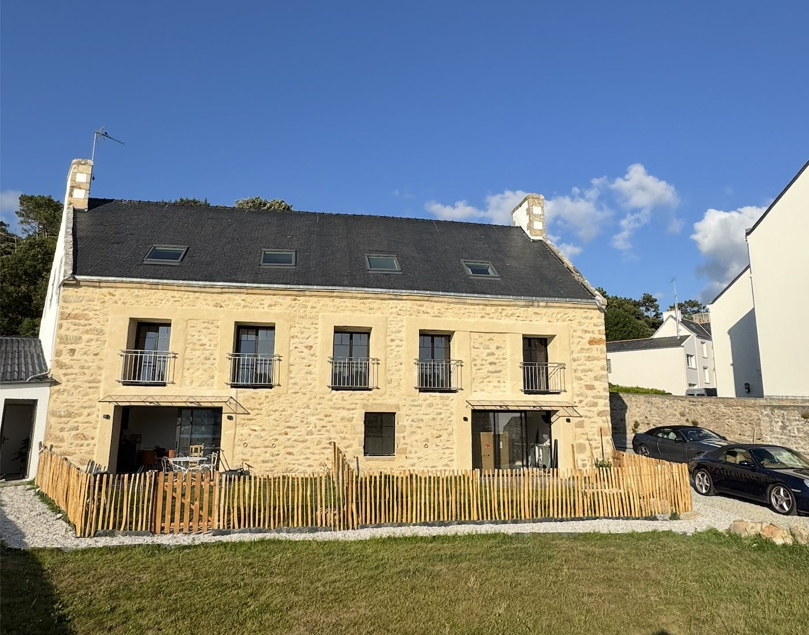
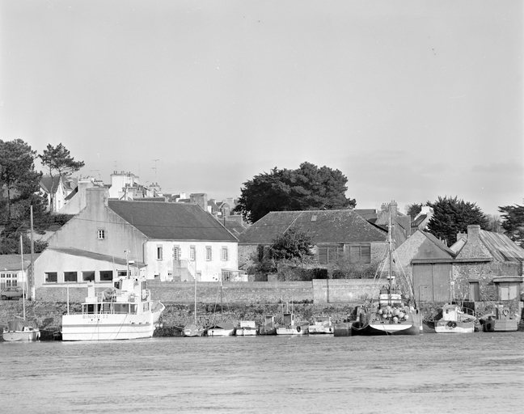
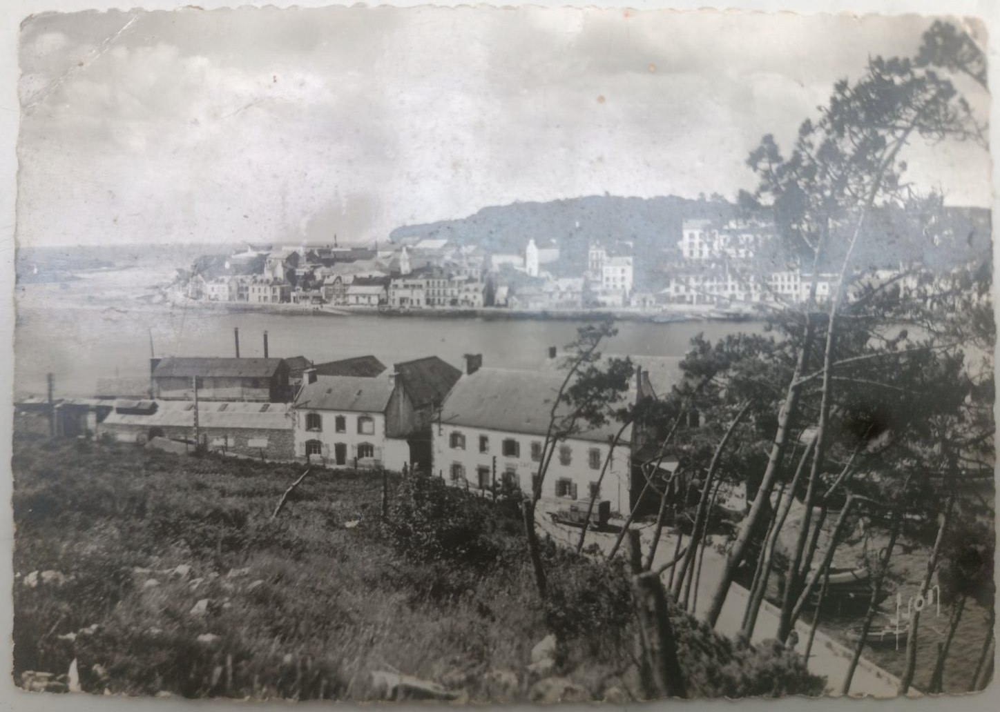

jardin · famille · dehors
Un jardin sur le port
Un appartement fait pour vivre dehors : café au soleil, dîner dans le jardin, port en toile de fond et accès immédiat au rythme des marées.
Découvrir l’appartementplouhinec · audierne · finistère
Des appartements uniques, lumineux et confortables, dans une bâtisse historique au bord de l’estuaire du Goyen.
une ancienne voilerie, un nouveau lieu de séjour
Au Clos de la Voilerie, on vient pour ralentir, respirer l’air marin et profiter d’une Bretagne vivante : le port, les marées, les chemins côtiers, les marchés, les retours de plage et les soirées dehors.
Chaque appartement a son caractère, mais tous partagent la même situation rare : une résidence de charme, face à l’eau, dans un lieu simple, lumineux et profondément breton, à 3 min à pieds des plages et des commerces.
toute l’année
Longues soirées d’été, grandes marées, lumière d’automne, balades vivifiantes ou week-ends cocooning : chaque saison donne une autre raison de venir.


trois ambiances
Jardin, balcon ou refuge sous les toits : trois appartements, une même adresse face à l’estuaire.
jardin · famille · dehors
Un appartement fait pour vivre dehors : café au soleil, dîner dans le jardin, port en toile de fond et accès immédiat au rythme des marées.
Découvrir l’appartement
lumière · confort · port
Un lieu lumineux et confortable pour profiter des marées, des couchers de soleil et des journées entre port, plages et sentiers côtiers.
Découvrir l’appartement
cocon · poutres · charme
Chaleureux et plein de charme : un cocon sous les poutres, idéal pour quelques jours à deux ou à trois, entre lumière de mer et calme breton.
Découvrir l’appartementvivre la côte autrement
Le Clos de la Voilerie est pensé comme un point de départ pour explorer, marcher, goûter, pagayer, regarder les lumières changer et rentrer le soir avec du sel dans les cheveux.


Plages sauvages, criques, falaises et Pointe du Raz : les paysages changent vite, souvent avec une lumière spectaculaire.

On part facilement pour quelques heures dehors, entre sentiers côtiers, petites routes, ports et points de vue.
un lieu riche d’histoire
Construite à la fin du XIXe siècle, la maison qui abrite aujourd’hui Le Clos de la Voilerie a longtemps été un lieu important entre Plouhinec et Audierne.
Édifiée en 1869 par un marchand de vin, elle servait d’abord au stockage des tonneaux débarqués depuis la cale située devant la propriété. Les anneaux conservés sur la façade ouest rappellent encore le passage des chevaux qui les transportaient vers les villages alentours.
Au début du XXe siècle, le bâtiment est repris par la famille Donnard, fabricants de voiles de bateaux. Ateliers, appartement familial, bistrot de marins : la maison a gardé de chaque époque une part de son caractère.




notre histoire
Nous sommes une famille de navigateurs. La mer fait partie de notre quotidien, de nos projets et de notre manière de regarder les lieux.
Quand nous avons découvert cette ancienne voilerie au bord du Goyen, nous avons immédiatement aimé son caractère : les pierres, la lumière, la proximité du port et cette sensation rare d’être à la fois dans un village vivant et face à l’eau.
Le Clos de la Voilerie est né de cette envie : créer des appartements simples, confortables et chaleureux, mais surtout ancrés dans leur paysage. Un lieu où l’on vient pour dormir, bien sûr — mais aussi pour respirer, regarder les marées et repartir avec un vrai souvenir de Bretagne.
préparer votre séjour
Donnez-nous vos dates pour connaitre immédiatement les disponibilités et accédez à la réservation.
Réserver ici